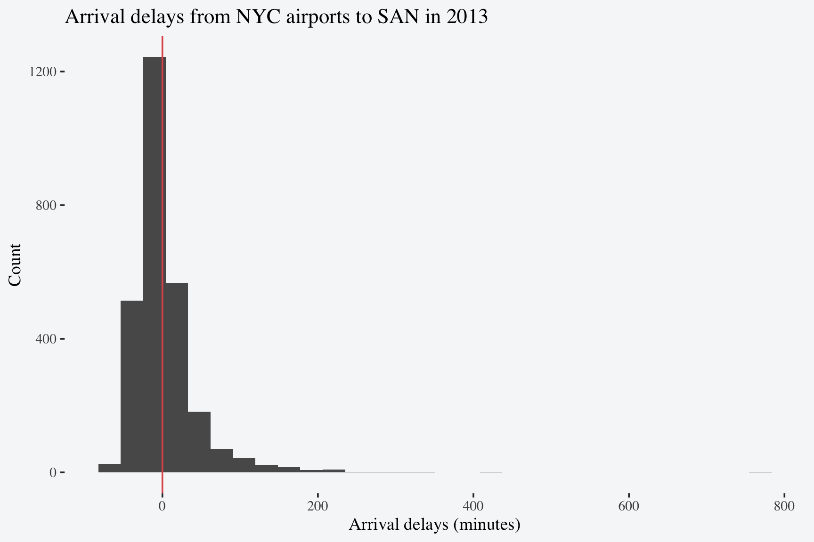

Code
library(tidyverse)
library(ggthemes)
library(nycflights13)
library(scales)
library(gt)Choose an airport outside New York, and count how many flights went to that airport from NYC in 2013. How many of those flights started at JFK, LGA, and EWR respectively?
summarize call would be to call count(origin).
There were 2,737 total flights from New York to San Diego. 1,603 of those flights originated from JFK and 1,134 from EWR.1
1 To add various punctuation to inline numeric values try the number function from the scales package.
The variable arr_delay contains arrival delays in minutes (negative values represent early arrivals). Make a ggplot histogram displaying arrival delays for 2013 flights from NYC to the airport you chose.
flights |>
filter(dest == "SAN") |>
ggplot(aes(x = arr_delay)) +
geom_histogram() +
geom_vline(xintercept = 0, color = "#e15759") +
labs(title = "Arrival delays from NYC airports to SAN in 2013",
x = "Arrival delays (minutes)",
y = "Count") +
theme_tufte(base_size = 14) +
theme(plot.background = element_rect(fill = "#f6f7f9",
color = NA))geom_vline adds a vertical line to your plot which can be useful for demarcating comparison or threshold values.
fill and removing the border of the plot using color.

Use left_join to add weather data at departure to the subsetted data. If time_hour didn’t exist in one or both of these datasets, which variables would you need to merge on? Calculate the mean temperature by month at departure (temp) across all flights.
flights |>
filter(dest == "SAN") |>
left_join(weather) |>
summarize(avg_temp = mean(temp, na.rm = TRUE) |> round(2) |> number(suffix = "°F"),
.by = month) |>
arrange(month) |>
gt() |>
cols_align(align = "center") |>
cols_label(month = "Month",
avg_temp = "Average Temperature") |>
tab_options(table.background.color = "#f6f7f9")round() and add the suffix °F with the number function from the scales package. This level of detail is not necessary for this assignment but it illustrates additional options available to you in the scales package.
| Month | Average Temperature |
|---|---|
| 1 | 37°F |
| 2 | 36°F |
| 3 | 41°F |
| 4 | 54°F |
| 5 | 64°F |
| 6 | 74°F |
| 7 | 82°F |
| 8 | 77°F |
| 9 | 70°F |
| 10 | 61°F |
| 11 | 46°F |
| 12 | 40°F |
If time_hour didn’t exist in one of both of these datasets you would have to join on origin, year, month, day, and hour.
Investigate if there is a relationship between departure delay (dep_delay) and precipitation (precip) in the full dataset. Is the relationship different between JFK, LGA, and EWR? I suggest answering this question by making a plot and writing down a one-sentence interpretation2.
2 Hint: Read about geom_smooth() and consider how you might use it with the argument method = "lm" to plot a relationship between these two variables.
flights |>
left_join(weather) |>
ggplot(aes(x = precip,
y = dep_delay)) +
geom_jitter(alpha = 0.1) +
geom_smooth(method = "lm") +
labs(title = "Does precipitation increase the likelihood of departure delays?",
x = "Precipitation (in inches)",
y = "Departure delay (in minutes)") +
theme_tufte(base_size = 14) +
theme(plot.background = element_rect(fill = "#f6f7f9",
color = NA))It looks like there is a slightly positive relationship between precipitation and the length of a departure delay.
flights |>
left_join(weather) |>
ggplot(aes(x = precip,
y = dep_delay,
color = origin,
linetype = origin)) +
geom_jitter(shape = 1) +
geom_smooth(method = "lm",
fill = "#f6f7f9") +
scale_color_manual(values = c("EWR" = "#fdc57e",
"JFK" = "#648f7b",
"LGA" = "#66629c")) +
labs(title = "Does precipitation increase the likelihood of departure delays?",
x = "Precipitation (in inches)",
y = "Departure delay (in minutes)") +
theme_tufte(base_size = 14) +
theme(plot.background = element_rect(fill = "#f6f7f9",
color = NA),
legend.position = "bottom")color and linetype to visualize this by origin airport.
alpha to facilitate viewing over-plotted points is to use a shape that only applies color to the outline, rather than the whole point shape.
When broken down by origin airport it looks like this slight positive association is just a bit larger for JFK and LGA than it is for EWR.